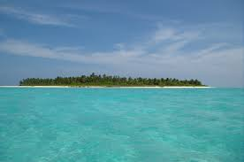

DiU iSlaNd
“Diu Island is an apt place to experience a dream vacation in one’s life"
DiU iSlaNd“Diu Island is an apt place to experience a dream vacation in one’s life" DiU iSlaNd“ The Island offers excellent opportunities for swimming , surfing and parasailing.” DiU iSlaNd"Diu is undoubtedly a phenomenal place on this planet. Embedded with ample beaches and tourists spots, this place can be visited at any point of time. ". DiU iSlaNd“Also, receiving sufficient rainfall during the season, the best time to visit this landmark is the summer season.” DiU iSlaNdSummer season in Diu prevails from March to July. The reason for suggesting this idea is because of the fact that during this period, patrons can opt for different activities on the beach.” DiU iSlaNd"Moreover, in the summer season, the tourists can enjoy a range of water sports to mark their pleasant journey. ." DiU iSlaNd"The temperature in summers is recorded at an average of 31 degree Celsius which is pretty good to visit an Island like Diu.". DiU iSlaNd"Nagoa Beach is one of the most popular picnic spots in Diu.". |
St.Marry's IslaNd“St.Marry's IslaNd is an apt place to experience a dream vacation in one’s life" St.Marry's IslaNd“ The Island offers excellent opportunities for swimming , surfing and parasailing.” St.Marry's IslaNd"St.Marry's IslaNd is undoubtedly a phenomenal place on this planet. Embedded with ample beaches and tourists spots, this place can be visited at any point of time. ". St.Marry's IslaNd“Also, receiving sufficient rainfall during the season, the best time to visit this landmark is the summer season.” St.Marry's IslaNdFour small islands together form the St.Mary's Islands. Each of these islands is interconnected and have their speciality. St.Marry's IslaNd"According to scientific records, rock formations found in St.Mary's Island match the rock formations at Madagascar in Africa St.Marry's IslaNd"The columnar basaltic (Volcanic) rock formations are the prominent attractions in St.Mary's Islands" St.Marry's IslaNd"These structures are unique in India. Hence, St.Mary's Islands is listed as one of the Geological Monuments of Karnataka and India. |
LaKshaDWeeR IsLand“Lakshadweep” actually means “a collection of lakh islands” (laksha means lakh whereas dweep means island). It covers 32 sq. Kilometer of land."

LaKshaDWeeR IsLand“ Eleven of the 36 coral atoll islands of Lakshadweep are inhabited” LaKshaDWeeR IsLand"The islands are the only coral atolls in India" ". 
LaKshaDWeeR IsLand“Liquor is available at the Bangaram Island . Moreover, it is prohibit in all other islands..” LaKshaDWeeR IsLandIndians have the approval to visit the islands but the same is not true for tourists." LaKshaDWeeR IsLand"Scuba diving and snorkelling are the best way to get a closer look at the island’s rich marine life" LaKshaDWeeR IsLand"Lakshadweep is the perfect place to luxuriate in pure seclusion" LaKshaDWeeR IsLand"The winding roads on Agatti take you through sparse palm groves to the only museum dedicated to Lakshadweep history, the Golden Jubilee Museum" |
Andaman Island“Some genetic studies suggest that the Andamanese were isolated from other populations over 30,000 years ago. The earliest archaeological evidence, however, dates back to some 2200 years.." 
Andaman Island“When the Nicobarese people were first discovered by Europeans, they used to speak Moh-Khmer and Shompen languages which are actually unrelated to Andamanese.” Andaman Island"Between 1014 and 1042 AD, the Chola Empire used the islands as a strategic naval base. They called the island Ma-Nakkavaram [open/naked land]" ". Andaman Island“Eventually, the famous European traveler, Marco Polo referred to the island as ‘Necuverann’ which was the corrupted version of its Tamil name..” Andaman IslandIndians have the approval to visit the islands but the same is not true for tourists." Andaman Island"Circa 1440, Italian traveler Niccolo de Conti mentioned the islands and said that the name means ‘Island of Gold’. " Andaman Island"During the early 15th century, the “Book of Wonders” produced in Paris depicted that the Andaman Islands were inhabited by wolf-headed people!" Andaman Island"Andamans was originally a part of Burma. Pandit Jawaharlal Nehru traded with them in exchange of two districts of Manipur!" |
Barren Island“The Barren Island volcano in the Andaman & Nicobar archipelago, which had been lying dormant for more than 150 years until it saw a major eruption in 1991, started spewing ash and lava late last week.." Barren Island“Barren Island is an island located in the Andaman Sea. It is the only confirmed active volcano in South Asia,” Barren Island"It is a part of the Indian Union Territory of Andaman and Nicobar Islands, and lies about 138 km (86 mi) northeast of the territory's capital, Port Blai" ". Barren Island“The first recorded eruption of the volcano dates back to 1787. Since then, the volcano has erupted more than ten times, with the most recent one being in 2017...” Barren IslandIndians have the approval to visit the islands but the same is not true for tourists." Barren Island"The 1991 eruption was particularly harmful to the island's fauna. A team from the Geological Survey of India visited Barren Island on 8–9 April 1993 to assess the impact of the eruption on the distribution, habit, and abundance of animal species. " Barren Island"A team from the National Institute of Oceanography spotted the volcano erupting on 23 January 2017. !" Barren Island"This volcanic island stands in the midst of a volcanic belt on the edge of the Indian and Burmese tectonic plates!" |
Nicobar Island“Some genetic studies suggest that the Andamanese were isolated from other populations over 30,000 years ago. The earliest archaeological evidence, however, dates back to some 2200 years.." Nicobar Island“When the Nicobarese people were first discovered by Europeans, they used to speak Moh-Khmer and Shompen languages which are actually unrelated to Andamanese.” 
Nicobar Island"Between 1014 and 1042 AD, the Chola Empire used the islands as a strategic naval base. They called the island Ma-Nakkavaram [open/naked land]" ". Nicobar Island“Eventually, the famous European traveler, Marco Polo referred to the island as ‘Necuverann’ which was the corrupted version of its Tamil name..” Nicobar IslandIndians have the approval to visit the islands but the same is not true for tourists." Nicobar Island"Circa 1440, Italian traveler Niccolo de Conti mentioned the islands and said that the name means ‘Island of Gold’. " Nicobar Island"During the early 15th century, the “Book of Wonders” produced in Paris depicted that the Andaman Islands were inhabited by wolf-headed people!" Nicobar Island"Andamans was originally a part of Burma. Pandit Jawaharlal Nehru traded with them in exchange of two districts of Manipur!" |